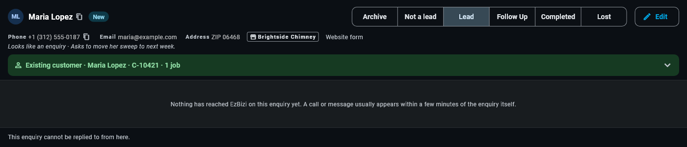
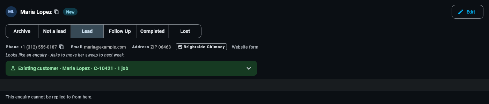

Jose 11-11: "stuff doesn't seem lined up properly, like there's wasted space still." Rendered from the real widget, demo data, 1400 px.
The status control and Edit/Call/Book share the name row's right end and stack into two rows at Jose's width, leaving a tall gap beside the name. The customer bar runs the full pane.

Row 1: name and chips left, Call / Edit / Book / ⋯ right, one line. Row 2: the status control, left-aligned (a picker under 640 px). The facts follow with even gaps. The customer bar is at most 720 px wide. Phone (design 171) is unchanged.
